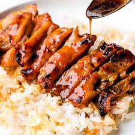

Chicken Teriyaki

Description
Food from japanese origin. It was also the first dish I learned to make
This is going to be my second paragraph of content
Ingredients
- Chicken breasts
- Olive oil
- Soy sauce
- Honey
- Brown sugar
- Rice vinegar
- Sesame Oil
- Ginger
- Garlic